Document Tracking
Know where every paper document is, who received it, and when.
How a document moves
Each office picks the next office when it forwards. The paper goes with it.
1
Get your account
- Ask ICTU for an account.
- ICTU gives you a username and a temporary password.
- Your account is only for you. Do not share it.
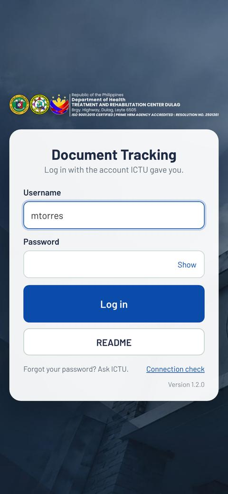
2
Log in the first time
- Type your username and password, tap Log in.
- Choose your own password: 8 or more letters and numbers.
- On a phone, tap Install this app to put it on your home screen.
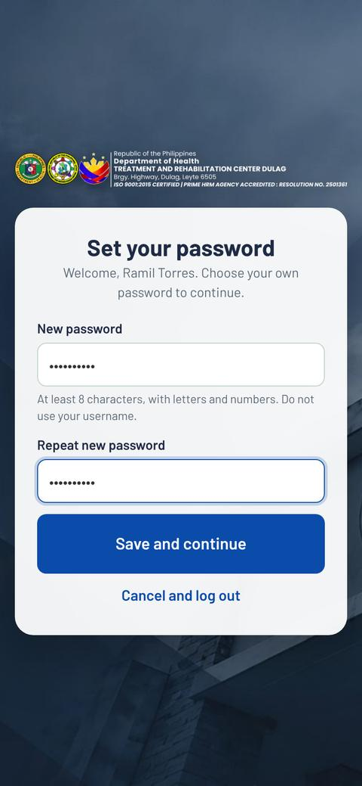
3
Send a document
- Tap New. Type the title, choose the type and the first office.
- Tap Log and get tracking number.
- Tap Print label, stick or print it on page 1, and bring the paper.
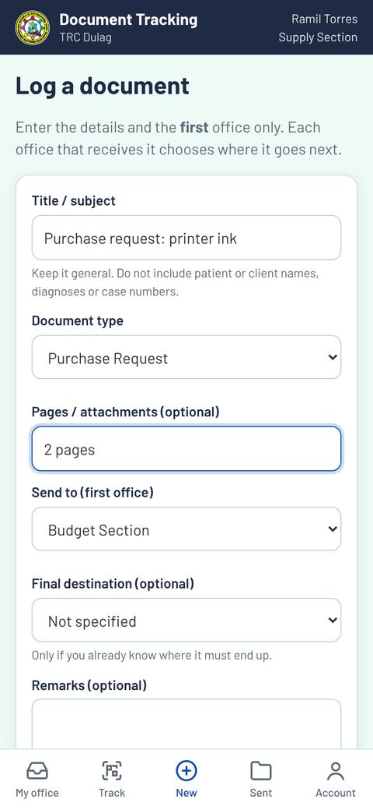
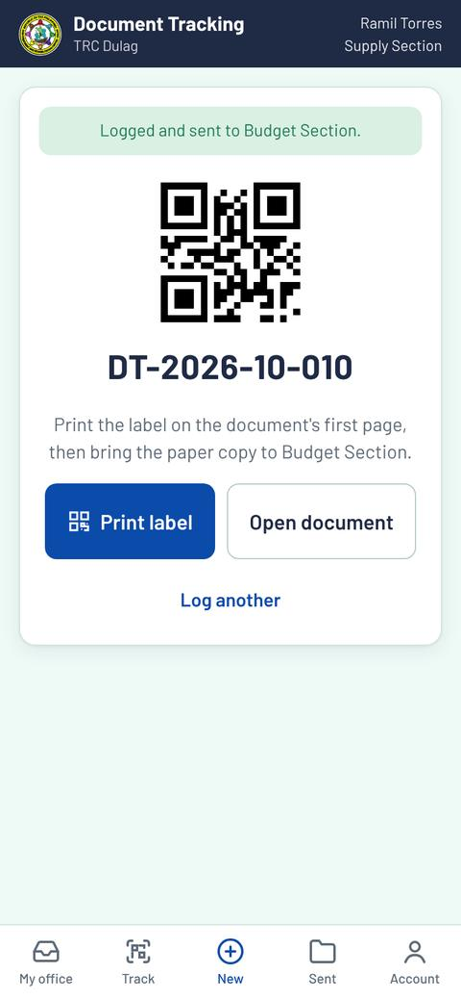
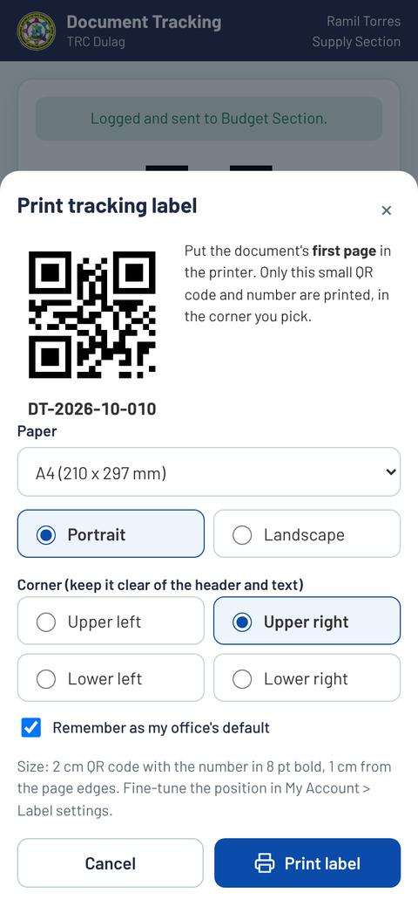
4
Receive a document
- On My office, tap Scan to receive and point at the QR label (or type the number, like 10-001).
- Tap Receive and sign.
- Sign with your finger, or type your PIN to use your stored signature.
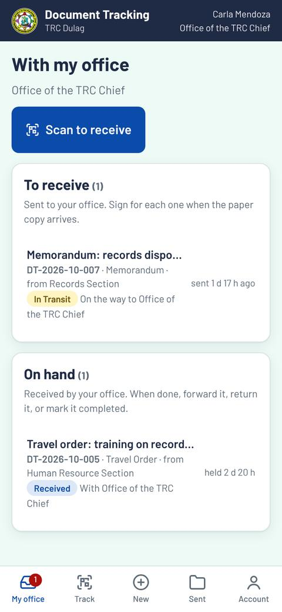
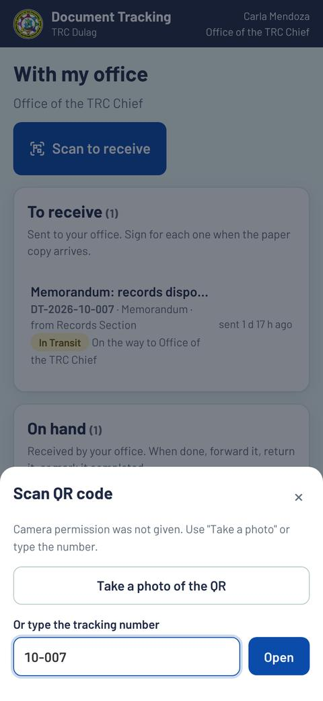
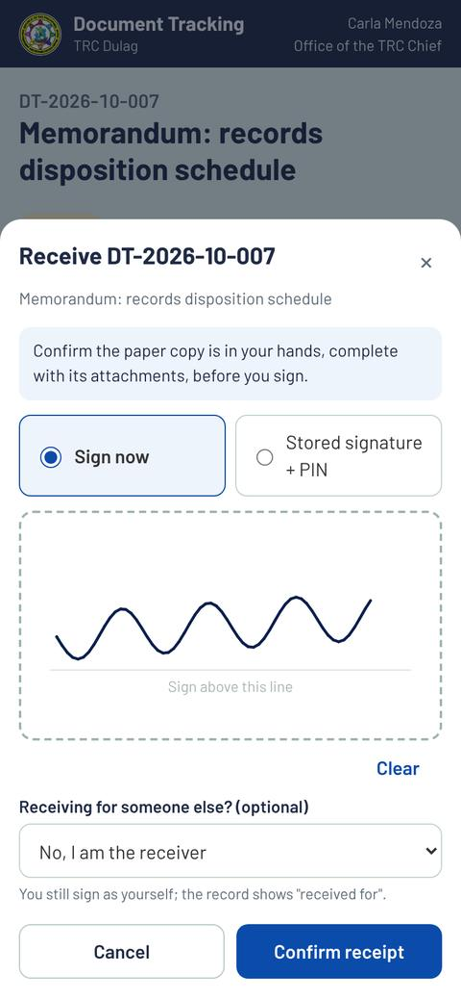
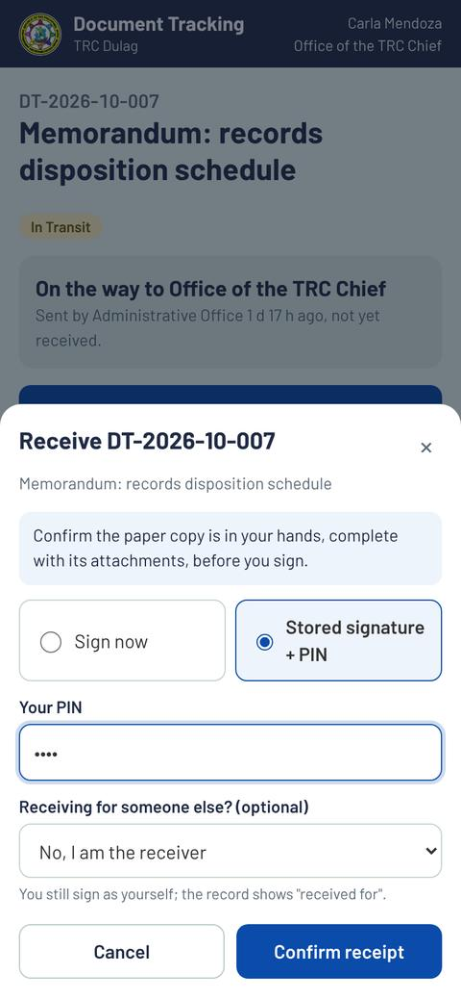
5
Forward, return or complete
- Open the document and tap Release (forward / return / complete).
- Forward: pick the next office. Return: pick a reason. Complete: last stop.
- Bring the paper to the office you picked.
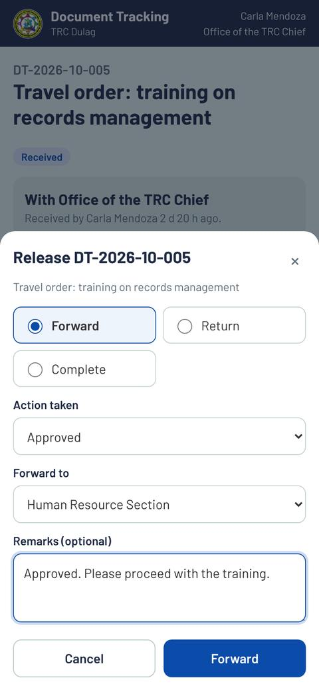
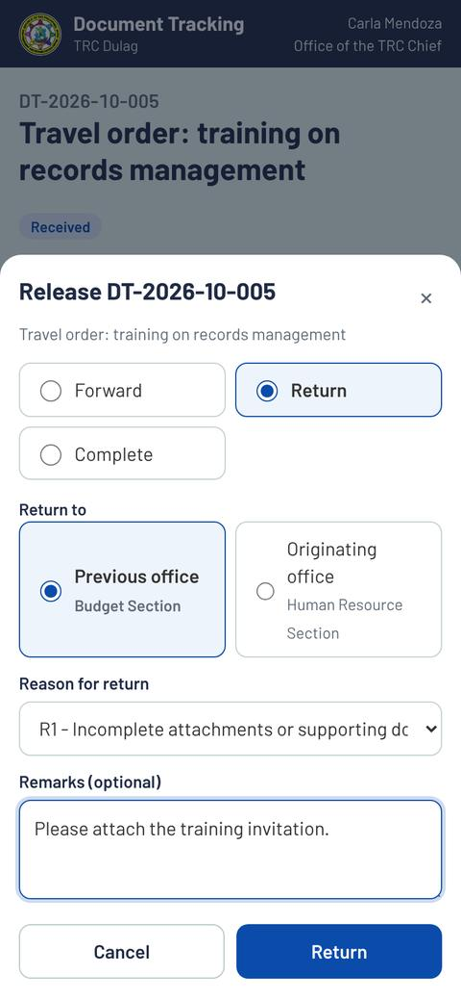
6
Find a document
- Tap Track, then type the number or tap Scan QR code.
- See every office it passed, who signed, and where it is now.
- You only see documents your office is part of.
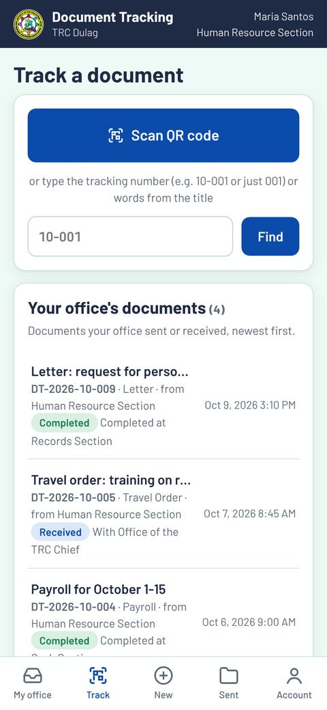
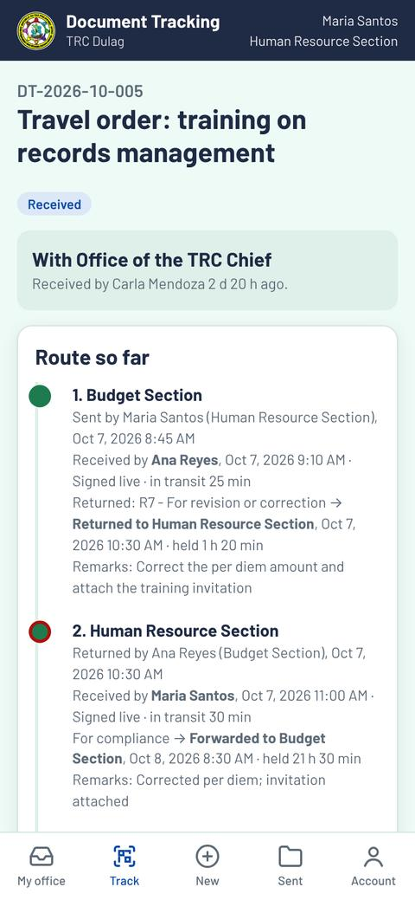
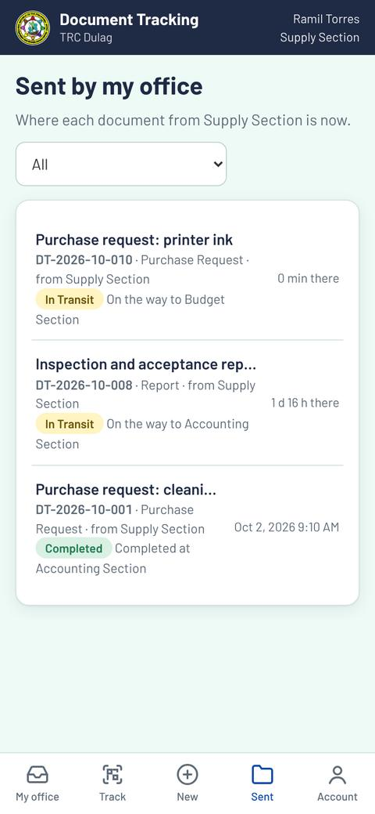
7
Set up your signature and PIN
- Go to Account > Set up signature and PIN.
- Draw it, or Upload a picture of your signature (dark ink on white paper).
- Choose a PIN of 4 to 6 digits. 5 wrong PINs lock it; ICTU unlocks it.
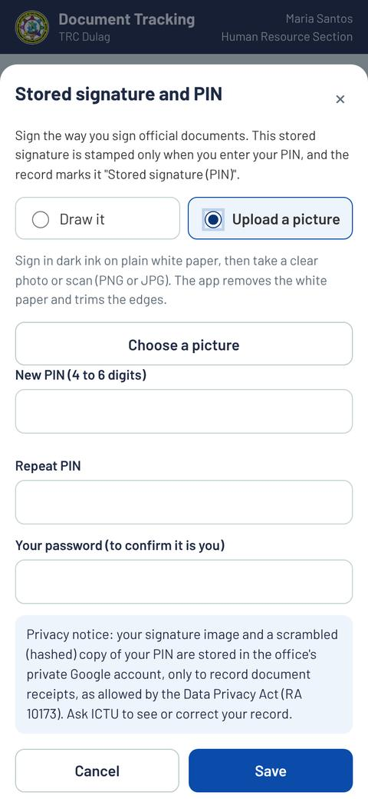
?
Problems and help
Forgot password or PIN locked?Ask ICTU to reset it.
App looks old after an update?Computer: press Ctrl+Shift+R. Phone: close and reopen the app.
Error code like E-PIN-01?Tell ICTU the code.
PrivacyOnly names, positions, offices, signatures and times are kept (Data Privacy Act of 2012).
★
What's new (changelog)
The list of changes could not be loaded.